Welcome to your comprehensive guide for setting up Hadoop and embarking on your journey into the world of Big Data! Below, you'll find a step-by-step guide that will help you install Hadoop on your system. Let's dive right in! 🌊
Step 1: Install Java Development Kit
To start, you'll need to install the Java Development Kit (JDK) on your Ubuntu system. The default Ubuntu repositories offer both Java 8 and Java 11, but it's recommended to use Java 8 for compatibility with Hive. You can use the following command to install it:
sudo apt update && sudo apt install openjdk-8-jdkStep 2: Verify Java Version
Once the Java Development Kit is successfully installed, you should check the version to ensure it's working correctly:
java -versionOutput:
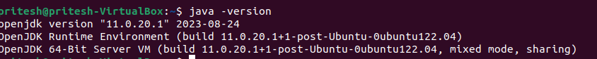Step 3: Install SSH
SSH (Secure Shell) is crucial for Hadoop, as it facilitates secure communication between nodes in the Hadoop cluster. This is essential for maintaining data integrity, and confidentiality, and enabling efficient distributed data processing across the cluster:
sudo apt install sshStep 4: Create the Hadoop User
You need to create a user specifically for running Hadoop components. This user will also be used to log in to Hadoop's web interface. Run the following command to create the user and set a password:
sudo adduser hadoopOutput:
Step 5: Switch User
Switch to the newly created 'hadoop' user using the following command:
su - hadoopStep 6: Configure SSH
Next, you should set up password-less SSH access for the 'Hadoop' user to streamline the authentication process. You'll generate an SSH keypair for this purpose. This avoids the need to enter a password or passphrase each time you want to access the Hadoop system:
ssh-keygen -t rsaOutput:
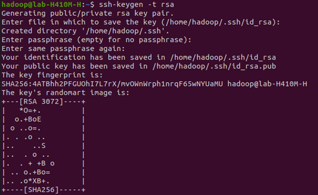Step 7: Set Permissions
Copy the generated public key to the authorized key file and set the proper permissions:
cat ~/.ssh/id_rsa.pub >> ~/.ssh/authorized_keyschmod 640 ~/.ssh/authorized_keysStep 8: SSH to the localhost
You will be asked to authenticate hosts by adding RSA keys to known hosts. Type 'yes' and hit Enter to authenticate the localhost:
ssh localhostOutput:
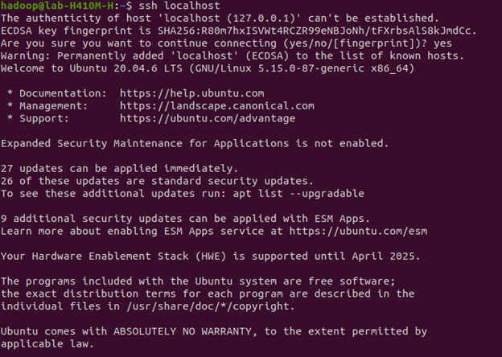Step 9: Switch User
Switch to the 'hadoop' user again using the following command:
su - hadoopStep 10: Install Hadoop
To begin, download Hadoop version 3.3.6 using the 'wget' command:
wget https://dlcdn.apache.org/hadoop/common/hadoop-3.3.6/hadoop-3.3.6.tar.gzOnce the download is complete, extract the contents of the downloaded file using the 'tar' command. Optionally, you can rename the extracted folder to 'hadoop' for easier configuration:
tar -xvzf hadoop-3.3.6.tar.gzmv hadoop-3.3.6 hadoopNext, you need to set up environment variables for Java and Hadoop in your system. Open the '~/.bashrc' file in your preferred text editor. If you're using 'nano,' you can paste code with 'Ctrl+Shift+V,' save with 'Ctrl+X,' 'Ctrl+Y,' and hit 'Enter':
nano ~/.bashrcAppend the following lines to the file:
export JAVA_HOME=/usr/lib/jvm/java-8-openjdk-amd64
export HADOOP_HOME=/home/hadoop/hadoop
export HADOOP_INSTALL=$HADOOP_HOME
export HADOOP_MAPRED_HOME=$HADOOP_HOME
export HADOOP_COMMON_HOME=$HADOOP_HOME
export HADOOP_HDFS_HOME=$HADOOP_HOME
export HADOOP_YARN_HOME=$HADOOP_HOME
export HADOOP_COMMON_LIB_NATIVE_DIR=$HADOOP_HOME/lib/native
export PATH=$PATH:$HADOOP_HOME/sbin:$HADOOP_HOME/bin
export HADOOP_OPTS="-Djava.library.path=$HADOOP_HOME/lib/native"
Output:
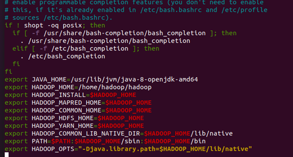Load the above configuration into the current environment:
source ~/.bashrcAdditionally, you should configure the 'JAVA_HOME' in the 'hadoop-env.sh' file. Edit this file with a text editor:
nano $HADOOP_HOME/etc/hadoop/hadoop-env.shSearch for the “export JAVA_HOME” and configure it .
JAVA_HOME=/usr/lib/jvm/java-8-openjdk-amd64Output:
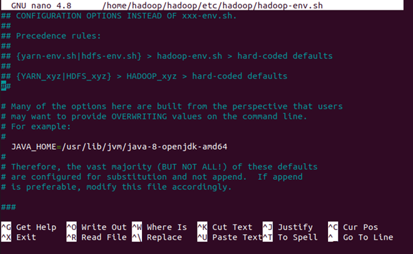Step 11: Configuring Hadoop
Create the namenode and datanode directories within the 'hadoop' user's home directory using the following commands:
cd hadoop/mkdir -p ~/hadoopdata/hdfs/{namenode,datanode}Next, edit the 'core-site.xml' file and replace the name with your system hostname:
nano $HADOOP_HOME/etc/hadoop/core-site.xml<configuration>
<property>
<name>fs.defaultFS</name>
<value>hdfs://localhost:9000</value>
</property>
</configuration>Output:
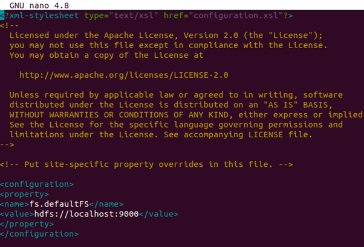Save and close the file. Then, edit the 'hdfs-site.xml' file:
Next, edit the 'hdfs-site.xml' file and replace the name with your system hostname:
nano $HADOOP_HOME/etc/hadoop/hdfs-site.xmlChange the NameNode and DataNode directory paths as shown below:
<configuration>
<property>
<name>dfs.replication</name>
<value>1</value>
</property>
<property>
<name>dfs.namenode.name.dir</name>
<value>file:///home/hadoop/hadoopdata/hdfs/namenode</value>
</property>
<property>
<name>dfs.datanode.data.dir</name>
<value>file:///home/hadoop/hadoopdata/hdfs/datanode</value>
</property>
</configuration>Output:
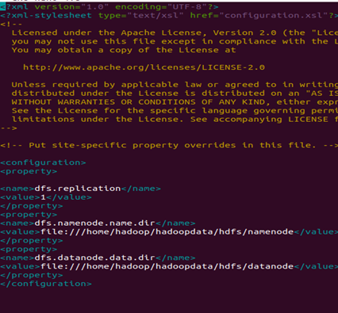Save and close the file. Then, edit the 'mapred-site.xml' file:
nano $HADOOP_HOME/etc/hadoop/mapred-site.xmlMake the following changes:
<configuration>
<property>
<name>yarn.app.mapreduce.am.env</name>
<value>HADOOP_MAPRED_HOME=$HADOOP_HOME/home/hadoop/hadoop/bin/hadoop</value>
</property>
<property>
<name>mapreduce.map.env</name>
<value>HADOOP_MAPRED_HOME=$HADOOP_HOME/home/hadoop/hadoop/bin/hadoop</value>
</property>
<property>
<name>dfs.datanode.data.dir</name>
<value>file:///home/hadoop/hadoopdata/hdfs/datanode</value>
</property>
</configuration>Output:
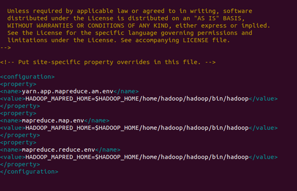Finally, edit the 'yarn-site.xml' file:
nano $HADOOP_HOME/etc/hadoop/yarn-site.xmlMake the following changes:
<configuration>
<property>
<name>yarn.nodemanager.aux-services</name>
<value>mapreduce_shuffle</value>
</property>
</configuration>Output:
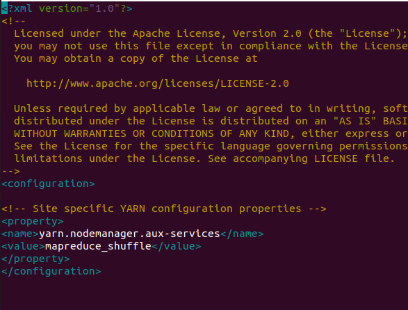Step 12: Start Hadoop Cluster
Before starting the Hadoop cluster, you need to format the Namenode as the 'hadoop' user. Format the Hadoop Namenode with the following command:
hdfs namenode -formatOutput:
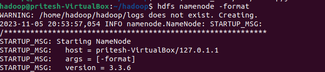Once the Namenode directory is successfully formatted with the HDFS file system, you will see the message "Storage directory /home/hadoop/hadoopdata/hdfs/namenode has been successfully formatted." Start the Hadoop cluster using:
start-all.shOutput:
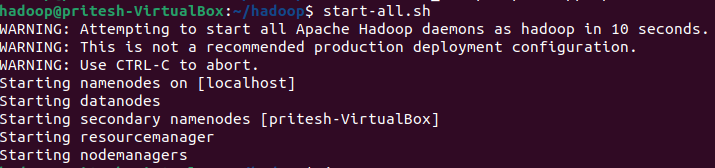You can check the status of all Hadoop services using the command:
jpsOutput:

Step 13: Access Hadoop Namenode and Resource Manager
First, determine your IP address by running:
ifconfigIf needed, install 'net-tools' using:
sudo apt install net-toolsTo access the Namenode, open your web browser and visit http://your-server-ip:9870. Replace 'your-server-ip' with your actual IP address. You should see the Namenode web interface.
Output:
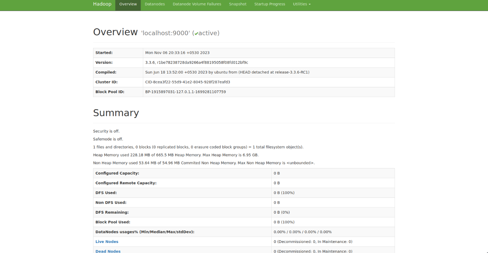To access the Resource Manager, open your web browser and visit the URL http://your-server-ip:8088. You should see the following screen:
Output:
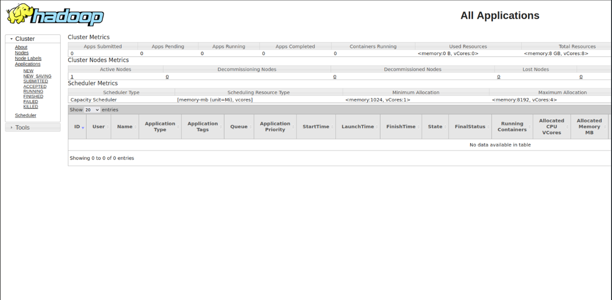Step 14: Verify the Hadoop Cluster
The Hadoop cluster is installed and configured. Next, we will create some directories in the HDFS filesystem to test Hadoop. Create directories in the HDFS filesystem using the following command:
hdfs dfs -mkdir /test1hdfs dfs -mkdir /logsNext, run the following command to list the above directory:
hdfs dfs -ls /You should get the following output:
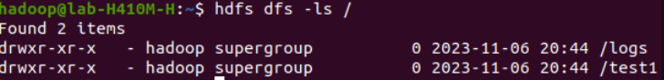Also, put some files into the Hadoop file system. For example, put log files from the host machine into the Hadoop file system:
hdfs dfs -put /var/log/* /logs/You can also verify the above files and directories in the Hadoop web interface. Go to the web interface, click on Utilities => Browse the file system. You should see the directories you created earlier on the following screen:
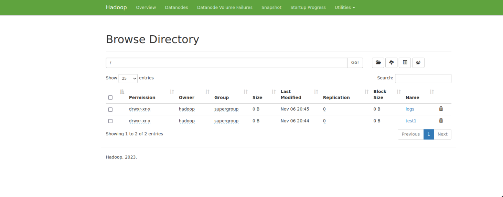Step 15: To Stop Hadoop Services
To stop the Hadoop service, run the following command as a Hadoop user:
stop-all.shOutput:
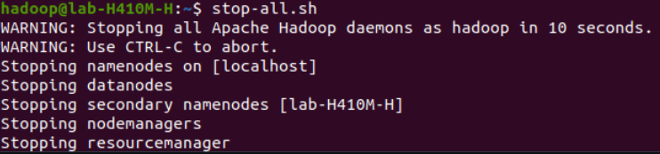In summary, you've learned how to install Hadoop on Ubuntu. Now, you're ready to unlock the potential of big data analytics. Happy exploring!